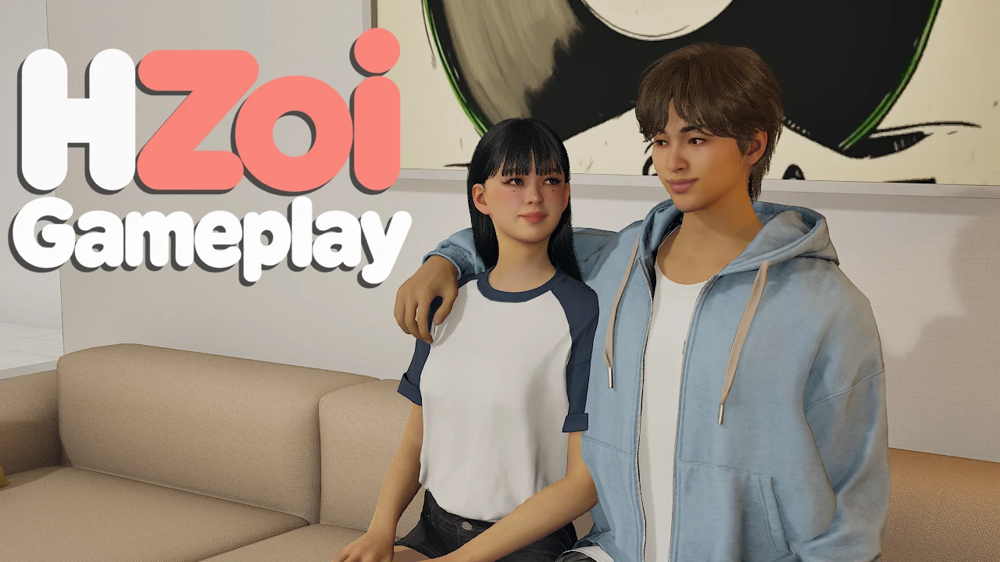
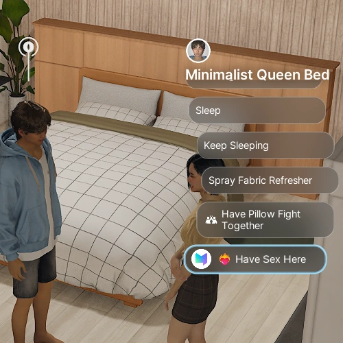

Download HZoi Gameplay
Add intimate encounters to inZOI. Invite a partner yourself or let Zois take the initiative. HZoi Gameplay uses SceneZOI to play scenes from your installed content packs.

Install & play
Install HZoi Gameplay
You need SceneZOI 1.7.3 or newer and a compatible content pack. HZoi is recommended for standing, bed and sofa scenes.
- Download the packaged ZIPs. Get HZoi Gameplay above and download SceneZOI and your content pack separately.
- Extract the ZIPs. Close inZOI and extract each mod to
Documents\inZOI\Mods. Keep the folder name from the ZIP and check thatmod_manifest.jsonsits directly inside it. When updating, remove the previous HZoi Gameplay folder before extracting the new one. Version 1.0.0 usesHZoiGameplayPrototype_4BD2AC16. The renamed package usesHZoiGameplay_4BD2AC16. - Enable the mods. Turn on HZoi Gameplay, SceneZOI and your content pack in the game’s mod menu, then load your household.
Start an encounter
- Click a supported bed, sofa or clear spot on the ground and choose Have Sex Here.
- Select a partner and click Invite. If the partner accepts, both Zois walk to the spot and check for privacy before the encounter starts.
- To let the pair find a place, click another Zoi and choose Have Sex under Romance.


Choose a content pack
HZoi is the content pack by the same author that adds sexually explicit animations, sound effects, voices, facial expressions and male genital meshes. Download HZoi ↗
TALZOI – Tater’s Animation Library for HZOI ↗ is a content pack that adds animations and voices. Follow the pack’s requirements on Nexus Mods.
This list is updated manually and may not reflect the latest available packs.
Other SceneZOI packs can also work if they supply a compatible scene for the pair and venue, with an action that lets both Zois complete an Excitement task. Supported actions and playback rules ↗
What’s new
Read the latest changelog on GitHub.
What HZoi Gameplay does
- Two-Zoi invitations
- Invite from a venue or the Romance menu. Acceptance follows inZOI’s Set the Mood rules, including the Zois’ relationship and mood.
- Autonomous encounters
- Zois with autonomy enabled can make an invitation on their own. The invited Zoi can respond with autonomy off.
- Venue selection & privacy
- Zois look for reachable indoor spots, starting with vacant rooms. If they can’t find suitable furniture, they can choose a clear standing spot.
- Walk-ins & cheating reactions
- Witnesses react to what they can see. Familiarity and personality affect whether a pair stops. An official partner can trigger inZOI’s cheating reactions.
- Auto mode & outcomes
- Auto mode progresses through the encounter. Turn it off to choose scenes yourself, or use Exit to return to normal play. The outcome can affect Romance, needs and moodlets.
- 15 in-game languages
- Menus follow the game’s language. Choose the modded language entry in Game Options for translated overhead dialogue and moodlet tooltips.
Contributors
- acenetizenMaintainer and lead developer
Support & community
Ask questions or talk with other players and mod authors on Discord.
Source code & contributions
HZoi Gameplay is free and open source under GPLv3. Fork it to experiment with your own gameplay rules, or send a pull request to contribute.